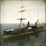
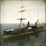

Requires
- Buildings:

Enables
- Buildings:


- Units:


 



Basic Building Statistics (can be modified by difficulty level, arts, skills, traits and retainers)
- Cost: 1700
- +1 to possible trade routes (sea)
- Recruitment capacity (ship under construction): +1
- +2 per turn to town growth from trade within this province
- Improves export capacity (increases trade values) by +140
Description
The sea-roads lead everywhere for the adventurous.
A port is a man-made structure with sea walls improving a natural harbour, with warehouses and fishing buildings along the shore. It allows shipbuilding, lets the owning clan establish trade routes and helps commercial activity in the province. It also has a few coastal defences. Trade, or rather foreign access, was the issue that eventually brought down the Tokugawa Shogunate and forced the Japanese ruling class to adapt to the modern world. Faced with the prospect of seeing the country bullied and divided, as happened in China, the Shogun made the best of a potentially very bad situation and opened Japan to foreign traders. In doing so, he also opened the rest of the world to Japanese merchants, and they lost little time in taking advantage of the new situation. Even today, Japan is a nation built by, and reliant upon, trade.